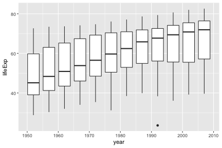
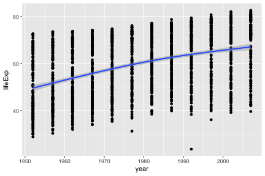
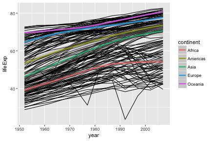
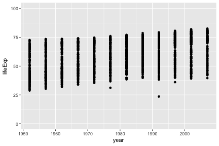
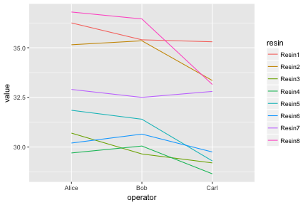

Plotting with ggplot2
We already saw some of R’s built in plotting facilities with the function plot. A more recent and much more powerful plotting library is ggplot2. This implements ideas from a book called “The Grammar of Graphics”. The syntax is a little strange, but there are plenty of examples in the online documentation.
If ggplot2 isn’t already installed, we need to install it.
install.packages("ggplot2")We then need to load it.
library(ggplot2)Producing a plot with ggplot2, we must give three things:
- A data frame containing our data.
- How the columns of the data frame can be translated into positions, colors, sizes, and shapes of graphical elements (“aesthetics”).
- The actual graphical elements to display (“geometric objects”).
Using ggplot2 with a data frame
We will be using data from Gapminder on life expectancy over time in different countries. Load it with:
gap <- read.csv("r-intro-files/gapminder.csv")
head(gap)## country continent year lifeExp pop gdpPercap
## 1 Afghanistan Asia 1952 28.801 8425333 779.4453
## 2 Afghanistan Asia 1957 30.332 9240934 820.8530
## 3 Afghanistan Asia 1962 31.997 10267083 853.1007
## 4 Afghanistan Asia 1967 34.020 11537966 836.1971
## 5 Afghanistan Asia 1972 36.088 13079460 739.9811
## 6 Afghanistan Asia 1977 38.438 14880372 786.1134Let’s make our first ggplot.
ggplot(gap, aes(x=year, y=lifeExp)) +
geom_point()
The call to ggplot and aes sets up the basics of how we are going to represent the various columns of the data frame. aes defines the “aesthetics”, which is how columns of the data frame map to graphical attributes such as x and y position, color, size, etc. We then literally add layers of graphics to this.
You may notice that aes does something very odd, since its bare arguments refer to columns of the data frame as though they were variables. R functions sometimes perform magic tricks like this for the sake of allowing concise expressive code.
Further aesthetics can be used. Any aesthetic can be either numeric or categorical, an appropriate scale will be used.
ggplot(gap, aes(x=year, y=lifeExp, color=continent, size=pop)) +
geom_point()
Challenge
This R code will get the data from the year 2007:
gap2007 <- gap[ gap$year == 2007 ,]Create a ggplot of this with gdpPercap on the x-axis and lifeExp on the y-axis.
Further geoms
To draw lines, we need to use a “group” aesthetic.
ggplot(gap, aes(x=year, y=lifeExp, group=country, color=continent)) +
geom_line()
A wide variety of geoms are available. Here we show Tukey box-plots. Note again the use of the “group” aesthetic, without this ggplot will just show one big box-plot.
ggplot(gap, aes(x=year, y=lifeExp, group=year)) +
geom_boxplot()
geom_smooth can be used to show trends.
ggplot(gap, aes(x=year, y=lifeExp)) +
geom_point() +
geom_smooth()## `geom_smooth()` using method = 'gam'
Aesthetics can be specified globally in ggplot, or as the first argument to individual geoms. Here, the “group” is applied only to draw the lines, and “color” is used to produce multiple trend lines:
ggplot(gap, aes(x=year, y=lifeExp)) +
geom_line(aes(group=country)) +
geom_smooth(aes(color=continent))## `geom_smooth()` using method = 'loess'
Highlighting subsets
Geoms can be added that use a different data frame, using the data= argument.
australia <- gap[ gap$country == "Australia" ,]
ggplot(gap, aes(x=year, y=lifeExp, group=country)) +
geom_line() +
geom_line(data=australia, color="red", size=2)Notice also that the second geom_line has some further arguments controlling its appearance. These are not aesthetics, they are not a mapping of data to appearance, rather they are direct specification of the appearance. There isn’t an associated scale as when color was an aesthetic.
Fine-tuning a plot
Adding labs to a ggplot adjusts the labels given to the axes and legends. A plot title can also be specified.
ggplot(gap, aes(x=year, y=lifeExp)) +
geom_point() +
labs(x="Year", y="Life expectancy", title="Gapminder")
Type scale_ and press the tab key. You will see functions giving fine-grained controls over various scales (x, y, color, etc). Limits on the scale can be set, as well as transformations (eg log10), and breaks (labelled values).
Suppose we want our y-axis to start at zero.
ggplot(gap, aes(x=year, y=lifeExp)) +
geom_point() +
scale_y_continuous(limits=c(0,100))
The lims function can also be used to set limits.
Very fine grained control is possible over the appearance of ggplots, see the ggplot2 documentation for details and further examples.
Challenge
Continuing with your scatter-plot of the 2007 data, add axis labels to your plot.
Advanced: Give your x axis a log scale (see the documentation on scale_x_continuous, specifically the trans argument).
Using ggplot2 with a matrix
Let’s return to our first matrix example.
dat <- read.csv(file="r-intro-files/pvc.csv", row.names=1)
mat <- as.matrix(dat)ggplot only works with data frames, so we need to convert this matrix into data frame form, with one measurement in each row. We can convert to this “long” form with the melt function in the library reshape2.
library(reshape2)
long <- melt(mat)
head(long)## Var1 Var2 value
## 1 Resin1 Alice 36.25
## 2 Resin2 Alice 35.15
## 3 Resin3 Alice 30.70
## 4 Resin4 Alice 29.70
## 5 Resin5 Alice 31.85
## 6 Resin6 Alice 30.20colnames(long) <- c("resin","operator","value")
head(long)## resin operator value
## 1 Resin1 Alice 36.25
## 2 Resin2 Alice 35.15
## 3 Resin3 Alice 30.70
## 4 Resin4 Alice 29.70
## 5 Resin5 Alice 31.85
## 6 Resin6 Alice 30.20ggplot(long, aes(x=operator, y=value, group=resin, color=resin)) +
geom_line()
Notice how ggplot is able to use either numerical or categorical (factor) data as x and y coordinates.
We have shown the entire data set as an “interaction plot”. We can directly see the whole story this data has to tell. When it is possible to plot an entire data set, this should be the first step before any summarizing and statistical testing. Even if there is too much data to plot in its entirety, it is always possible to plot a random subset.
Faceting
Faceting lets us quickly produce a collection of small plots. The plots all have the same scales and the eye can easily compare them.
ggplot(long, aes(x=operator, y=value)) +
geom_point() +
facet_wrap(~ resin) diabetes <- read.csv("r-intro-files/diabetes.csv")
ggplot(diabetes, aes(x=age, y=glyhb, color=location)) +
geom_point() +
facet_grid(frame ~ gender)Challenge
Let’s return again to your scatter-plot of the 2007 data.
Adjust your plot to now show data from all years, with each year shown in a separate facet, using facet_wrap(~ year).
Advanced: Highlight Australia in your plot.
Saving ggplots
Ggplots can be saved as we talked about earlier, but with one small twist to keep in mind. The act of plotting a ggplot is actually triggered when it is printed. In an interactive session we are automatically printing each value we calculate, but if you are using a for loop, or other R programming constructs, you might need to explcitly print( ) the plot.
# Plot created but not shown.
p <- ggplot(long, aes(x=operator, y=value)) + geom_point()
# Only when we try to look at the value p is it shown
p
# Alternatively, we can explicitly print it
print(p)
# To save to a file
ggsave("test.png", p)
# or
png("test.png")
print(p)
dev.off()